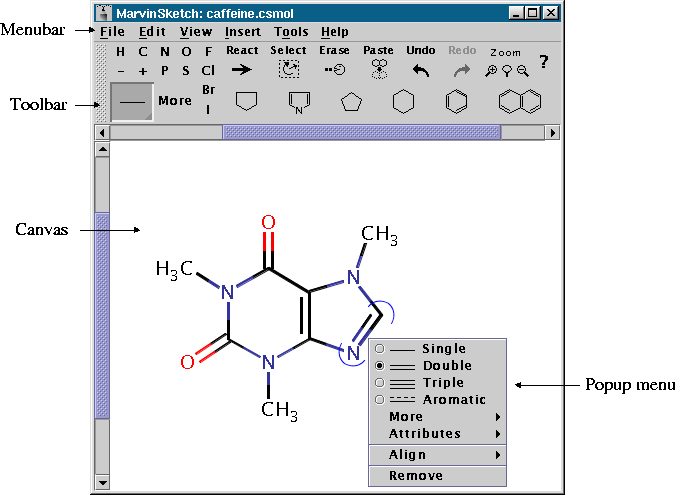
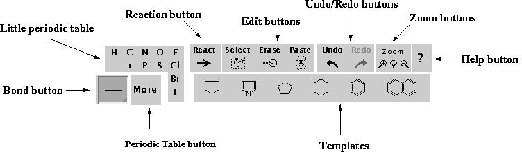
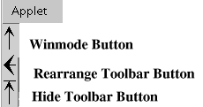
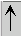

MarvinSketch is a Java based chemical drawing tool. MarvinSketch
allows you to create and edit molecules in various file formats
including MDL mol, Compressed mol, unique SMILES, SMARTS, Sybyl mol,
PDB, CML, XYZ, POV-Ray.
MarvinSketch includes many advanced
features, such as recent structures (i.e. structure history), visual
fragment placement, ambiguity reduction, and multi-level undo/redo.
The Marvin Applets are unique in the sense that they support all
Java platforms, ranging from the ancient Java 1.0 to Swing. They work
in older web browsers, but if they find themselves in a modern
browser, they automatically utilize newer Java features.
Below is an image of the MarvinSketch GUI, followed by descriptions of each of the components

The canvas is the drawing area for graphically creating and editing structures. You can easily draw atoms, bonds, rings, arrows, and much more on the canvas using your mouse.
The toolbar contains a collection of buttons and icons to quickly
aid you in drawing molecular structures. The toolbar contains two
types of buttons: click and toggle. Click buttons act as normal
buttons - performing an action when you click them. Toggle buttons
have multiple states that are alternated between with each mouse
click. The toolbar contains several toggle buttons, most relating to
drawable elements such as bonds, templates (predefined structures),
and arrows. When one of these buttons is selected, it sets the
drawing item associated with the mouse within the canvas.
The
image below shows the different parts of the toolbar

|
Toolbar Elements |
|
|---|---|
|
Little Periodic Table |
The most important (frequently used) atoms have buttons on the
toolbar. This part of the toolbar is referred to as the
Little periodic table. It also includes
charge buttons ("-" and "+"). |
|
MarvinSketch contains a full periodic table to allow you to add any chemical element to your molecule. Clicking the More button will open the Periodic table pop-up menu. |
|
|
Bond Button |
The Bond button allows you to select the
bond type you wish to draw. Press and hold the bond button for a
pop-up list of bond choices. |
|
Templates |
MarvinSketch provides several predefined chemical structures,
called templates (e.g., cyclopenthane, cyclohexan, benzene). |
|
Clicking on the Reaction
button allows you to draw a Reaction arrow within the molecule. |
|
|
MarvinSketch provides the following familiar editing functionality
in the Toolbar: Select, Cut, Copy, Paste, Erase,
Undo, and Redo.
To use the cut or copy functionality, you must first select part of
the molecule. To paste cut/copied structures, click on
Paste, then click the canvas where you would
like to place the structure. |
|
|
Zoom Buttons |
The Zoom buttons allow you to zoom in and out, and to fit the molecule to the current size of the window. |
|
Help Button |
Opens the Help document. |
The AWT applet functions a little differently than the Swing
applet and application. Its toolbar contains three AWT-specific
buttons to manipulate the toolbar and access the Menu.

In addition to the features available
through the toolbar, MarvinSketch has several features that can be
accessed via the Menu bar.
N.B. In the AWT version of Marvin, the
Menu bar is not initially visible. To access the Menu bar, click the
Window Mode
button (labeled with an arrow pointing upward and located to the left of the
toolbar),

which will launch the Sketcher in a new window with a visible Menu bar.
|
Menus and Major Submenus |
|
|---|---|
|
File Menu |
The File menu contains the available file operations, such as
New, Open, Save, Print, and Close. The
(unsigned) Swing and AWT applets contain only a subset of these
functions. |
|
Edit Menu |
The Edit menu contains general editing functionality (i.e.
Copy and Paste)
as well as Marvin-specific editing options. |
|
Atom Maps Submenu |
To automatically assign or remove map numbers to atoms. |
|
Groups Submenu |
The Groups submenu contains the tools for
creating and working with abbreviated groups (S-groups). |
|
Edit Source |
Choosing Source from the
Edit menu opens the Edit Source window. The
Edit Source window opens the file for the current molecule as text.
You can view and edit the molecule file in any of the supported formats
(SMILES, molfile, XYZ, etc). |
| Preferences |
The |
|
View Menu |
The View menu allows you to alter the
way the molecule is displayed without altering the molecule
itself. You can change the molecule display type, background color,
color scheme, error highlighting, etc. |
|
Transform Submenu |
You can zoom and rotate edited components with help of the Transform submenu. In the normal mode (None/Normal Sketching), you can draw to the canvas. If you select the Zoom/Rotate option and drag the mouse on the canvas, you can zoom the content of the canvas and/or rotate it in 2D. By choosing the Rotate in 3D option, you can spin the structure around its central point in 3 dimension with the help of the mouse. Unlike the molecule cleaning, these transformations do not modify the atom coordinates, they change only the view point. |
|
Hydrogens Submenu |
The Hydrogens submenu controls the
display of implicit and explicit hydrogen atoms in the molecule. |
|
The Insert menu allows you to draw
templates, graphic objects, text boxes and electron flow arrow on
the canvas. |
|
|
The Templatesmenu contains a list of
available template groups. By default, the Generic template list is displayed in the Templates panel of
the toolbar. The Ring templates group contains a collection of
different types of rings. It can also be displayed in the toolbar
by selecting the Rings choice.
The Amino Acids and Polycyclic template list includes too many
templates to fit in the toolbar, so they are displayed in a pop-up
window when you choose them. |
|
|
Tools |
|
|
Help |
Select the Help menu item to access this
help document. |
There are four pop-up menus in MarvinSketch. When you right click on the canvas, a menu will appear based on the position of the mouse. The following table summarizes these menus:
|
Mouse Location |
Associated Right-Click Menu |
|---|---|
|
Atom |
Atom Pop-up Menu |
|
R-group |
R-group Pop-up Menu (Modified Atom menu) |
|
Bond |
Bond Pop-up Menu |
|
Open canvas space |
Edit Pop-up Menu |
The Atom pop-up menu appears when you right-click on an atom on the canvas. It contains options for atom-specific activities.
|
Menu Item |
Description |
|---|---|
|
Stereo |
|
|
Charge |
Applies a charge between [-9,9] to the atom. This submenu is not dynamically generated, so Marvin will let you set any of these values on any atom, highlighting the Valence Errors in red upon completion. In other words, Marvin will allow you to set a charge of -5 on hydrogen, despite the fact that this is chemically impossible. |
|
Radical |
Sets the selected atom as a radical. You can select the type of radical - monovalent, divalent, divalent singlet, or divalent triplet. The Off option removes the radical designation. |
|
Isotope |
The Isotope submenu contains a list of the isotopes of the selected element, dynamically generated based on the selected atom. Select an isotope to set or change the isotope number or choose Off to remove the the isotope number. |
|
Map |
The Map submenu contains a list of available map identifiers that can be set on each atom. Map labels are useful because they remain constant, unlike atom indexes, which can change as the molecule is altered. Another common use is to mark atoms in reactions. An advantage of Map labels is that they can be saved into SMILES and MDL format. |
|
R-Group |
Gives a submenu of R-group labels to change the selected atom to an R-group label. |
|
Group |
If the selected atom is part of a group (R-group definition or abbreviated group), you can specify an attachment point. |
|
Link Node |
See Link node specifies rings or chains by repeating carbon atoms. |
|
Branch |
Adds a new bond with implicit hydrogen to the selected atom. This option is disabled for atoms that can have no more bonds. |
|
Remove |
Removes the selected atom from the molecule. |
The R-group pop-up menu appears when you right-click on an atom labeled as an R-group.
|
Menu Item |
Description |
|---|---|
|
Map |
Map numbers are user defined atom identifiers. They are commonly used in reaction equations marking atoms taking part in the reaction. Maps are also useful in complex chemical expressions referring to atoms of certain functional groups. |
|
R-Group |
Gives a submenu of R-group label choices, Build Markush structures or R-group queries using the R-group labels. R-groups symbolise alternative substituents. |
|
Group |
If the selected atom is part of a group (R-group definition or abbreviated group), you can specify an attachment point. |
|
Link Node |
See Link node specifies rings or chains by repeating carbon atoms. |
|
Remove |
Removes the selected atom from the molecule. |
The bond pop-up menu appears when you right-click on a bond within the molecule. It allows you to make a number of changes to the selected bond.
|
Menu Item |
Submenu Items |
Description |
|---|---|---|
|
Bond Type Radio Buttons |
Single |
Changes the selected bond type to Single |
|
Double |
Changes the selected bond type to Double |
|
|
Triple |
Changes the selected bond type to Triple |
|
|
Aromatic |
Changes the selected bond type to Aromatic |
|
|
More |
Query bond types |
Changes the selected bond to a bond type (Single Up, Single Down, Single Up or Down, Double Cis or Trans, Double C/T or Unspec, Single or Double, Single or Aromatic, Double or Aromatic, Any) for use in a query. |
|
Attributes |
Stereo Search |
Uses stereoconfiguration of specified double bond when this molecule is used as a query. |
|
In Ring |
Sets a bond property so that when the molecule is used as a query, the specified bond must be in a ring to score a hit. |
|
|
In Chain |
Sets a bond property so that when the molecule is used as a query, the specified bond must be in a chain to score a hit. |
|
|
Align |
Vertical |
Orients the bond vertically |
|
Horizontal |
Orients the bond horizontally |
|
|
Remove |
|
Removes the selected bond from the molecule |
The Edit pop-up menu appears when you right-click on open canvas space (i.e. not on an atom or bond). This menu has two different states, corresponding to selection mode being turned on or off. Edit pop-up menu items include:
|
|
Enabled when Selection Mode is |
||
|---|---|---|---|
|
Menu Item |
Description |
ON |
OFF |
|
Recent |
The Recent submenu contains a list of atoms and templates previously placed on the canvas. It does not include recently used bonds. You can change the drawing object by selecting one of the items in this list. |
X |
X |
|
Copy |
Puts a copy of the selected object on the clipboard. |
X |
|
|
Copy as SMILES |
Puts a copy of the selected object on the clipboard in SMILES format. |
X |
|
|
Cut |
Puts the selected object on the clipboard and removes it from the canvas. |
X |
|
|
Paste |
Sets the drawing object to the item on the clipboard. |
X |
X |
|
Select All |
Quickly selects the entire molecule. |
X |
X |
|
Create Group |
Creates an abbreviated Group from the selected substructure. See the S-Groups section for more information on creating and using Groups. |
X |
|
|
Atom Maps |
Contains submenus to automatically assign or remove map numbers to selected atoms. |
X |
|
|
Flip |
Flips the structure on the canvas. The submenu allows you to choose horizontally or vertically. |
X |
X |
|
Attributes |
Edits structure attributes. |
X |
X |
|
|
Sends the molecule to the printer. |
X |
X |
Copyright © 1998-2006 ChemAxon Ltd.